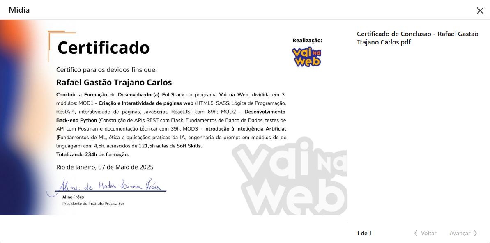
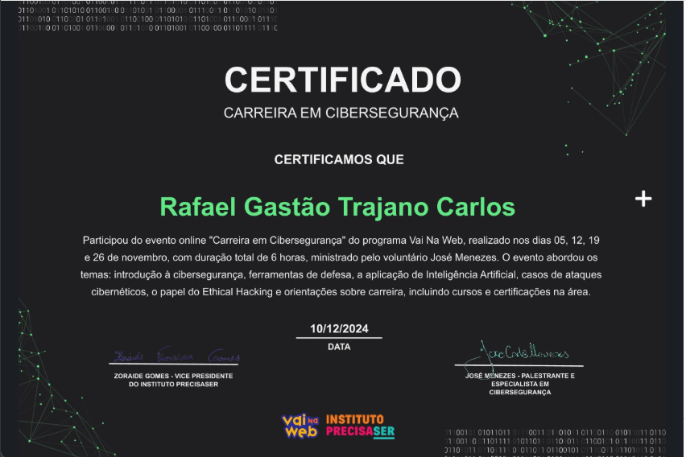
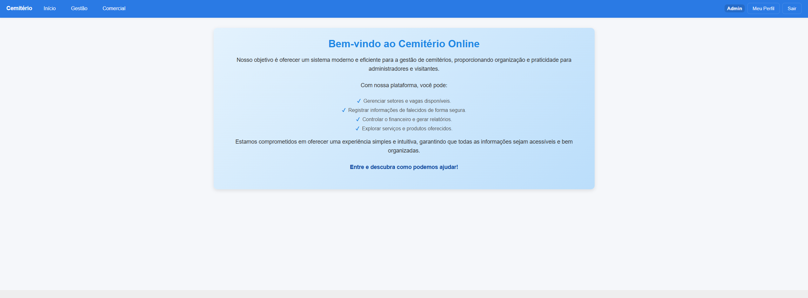

Rafael Gastão
Desenvolvedor Front-end
Construindo projetos práticos em HTML, CSS, JavaScript e React, com foco em interfaces modernas, performance e código bem estruturado.
Quem sou
Tenho 21 anos e sou apaixonado por tecnologia e desenvolvimento de software. Atualmente, estudo com desenvolvimento Full Stack, criando interfaces modernas e responsivas com React e SASS, além de desenvolver a lógica de aplicações e gerenciar bancos de dados com Python e MySQL. Gosto de desafios e de aprender novas tecnologias para resolver problemas do mundo real. Meu foco é sempre criar aplicações eficientes e bem estruturadas.
HABILIDADES
Stack técnico
JavaScript
React
Git & GitHub
SASS
Python
MySQL
FORMAÇÃO
Certificados
Cursos e certificações concluídos ao longo da minha trajetória.

Desenvolvedor(a) FullStack — Vai na Web
Formação concluída com 234h de carga horária.

Carreira em Cibersegurança
Certificação de trilha focada em fundamentos e práticas de segurança.
PROJETOS
Trabalhos recentes
Seleção de projetos desenvolvidos para estudo e prática.

Desafio Final — Biblioteca
Projeto web desenvolvido como desafio final, com foco em interface responsiva, organização de conteúdo e navegação intuitiva para uma experiência de uso clara e agradável.
Ver código
Cemitério Online
Sistema web para gestão de cemitérios, com foco em organização de informações e operações administrativas.
Ver código